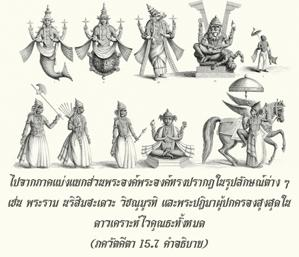

สิ่งมีชีวิตในโลกแห่งพันธนาการนี้เป็นละอองน้อยๆนิรันดรของข้า เนื่องจากชีวิตที่ถูกพันธนาการพวกเขาจึงต้องดิ้นรนด้วยความยากลำบากมากกับประสาทสัมผัสทั้งหกซึ่งรวมทั้งจิตใจ

โศลกนี้บุคลิกลักษณะของสิ่งมีชีวิตได้ให้ไว้อย่างชัดเจน สิ่งมีชีวิตเป็นละอองน้อยๆ ขององค์ภควานฺชั่วกัลปวสาน ไม่ใช่ว่าเราเป็นปัจเจกบุคคลในพันธชีวิต และเมื่อหลุดพ้นแล้วจะมาเป็นหนึ่งเดียวกับพระองค์ เรายังคงเป็นละอองน้อยๆ ชั่วนิรันดร ได้กล่าวไว้อย่างชัดเจนว่าเป็น สนาตนห์ ตามความเห็นของพระเวท องค์ภควานฺทรงปรากฏ และแบ่งภาคเป็นจำนวนนับไม่ถ้วน ภาคที่แบ่งแยกครั้งแรก เรียกว่าวิษฺณุ-ตตฺตฺว และภาคแบ่งแยกครั้งที่สองคือสิ่งมีชีวิต อีกนัยหนึ่ง วิษฺณุ-ตตฺตฺว คือภาคแบ่งแยกส่วนพระองค์ และสิ่งมีชีวิตเป็นภาคแบ่งแยกที่แยกออกไปจากภาคแบ่งแยกส่วนพระองค์ พระองค์ทรงปรากฏในรูปลักษณ์ต่างๆ เช่น พระราม, นฺฤสึห-เทว, วิษฺณุมูรฺติ และพระปฏิมาผู้ปกครองสูงสุดในดาวเคราะห์ ไวกุณฺฐ ทั้งหมด สิ่งมีชีวิตผู้เป็นภาคแบ่งแยกที่แยกออกมาเป็นผู้รับใช้นิรันดร ภาคแบ่งแยกส่วนพระองค์ของบุคลิกภาพสูงสุดแห่งพระเจ้า ซึ่งเป็นปัจเจกบุคคลแห่งองค์ภควานฺทรงปรากฏอยู่เสมอ ในทำนองเดียวกัน ภาคแบ่งแยกที่แยกออกไปแห่งสิ่งมีชีวิตก็มีบุคลิกลักษณะของตนเองเช่นกัน ในฐานะที่เป็นละอองอณูขององค์ภควานฺสิ่งมีชีวิตก็มีคุณสมบัติส่วนน้อยๆ ของพระองค์ ดังเช่นอิสรภาพก็เป็นหนึ่งในคุณสมบัติ ทุกๆ ชีวิตในฐานะที่เป็นปัจเจกวิญญาณมีบุคลิกลักษณะส่วนตัว และมีรูปแบบแห่งความเป็นอิสระอยู่เล็กน้อย จากการใช้อิสระภาพไปในทางที่ผิดทำให้กลายมาเป็นพันธวิญญาณ และจากการใช้อิสรภาพไปในทางที่ถูกจะทำให้เขาหลุดพ้นอยู่เสมอ ไม่ว่าในกรณีใดปัจเจกวิญญาณมีคุณสมบัติเหมือนกับองค์ภควานฺชั่วนิรันดร ในสภาวะหลุดพ้นเขาเป็นอิสระจากสภาวะทางวัตถุ และอยู่ภายใต้การปฏิบัติรับใช้ทิพย์ต่อองค์ภควานฺ ในพันธชีวิตเขาถูกสามระดับแห่งธรรมชาติวัตถุครอบงำ จนทำให้ลืมการรับใช้ด้วยความรักทิพย์ต่อพระองค์ ผลก็คือต้องดิ้นรนด้วยความยากลำบาก เพื่อดำรงไว้ซึ่งความเป็นอยู่ในโลกวัตถุ
สิ่งมีชีวิตไม่เพียงเฉพาะแต่มนุษย์เท่านั้น แมว และสุนัข แม้แต่บรรดาผู้ควบคุมโลกวัตถุผู้ยิ่งใหญ่ เช่น พระพรหม พระศิวะ หรือแม้แต่พระวิษฺณุทั้งหมดล้วนเป็นละอองอณูขององค์ภควานฺ ทั้งหมดเป็นอมตะ ไม่ได้เป็นปรากฏการณ์ชั่วคราว คำว่า กรฺษติ (“ดิ้นรน” หรือ “ต่อสู้อย่างหนัก”) มีความสำคัญมาก พันธวิญญาณถูกพันธนาการเหมือนถูกล่ามด้วยโซ่ตรวน ถูกอหังการล่ามโซ่ และจิตใจเป็นหัวหน้าผู้แทนซึ่งผลักให้เขามีความเป็นอยู่ทางวัตถุนี้ เมื่อจิตใจอยู่ในระดับความดีกิจกรรมนั้นก็ดีตาม แต่เมื่อจิตใจอยู่ในระดับตัณหากิจกรรมนั้นก็จะสร้างปัญหา และเมื่อจิตใจอยู่ในระดับอวิชชาเขาก็จะเดินทางอยู่ในเผ่าพันธุ์ชีวิตที่ต่ำกว่า อย่างไรก็ดี ในโศลกนี้มีความชัดเจนว่า พันธวิญญาณพร้อมทั้งจิตใจ และประสาทสัมผัสต่างๆถูกร่างวัตถุปกคลุม และเมื่อหลุดพ้นแล้วสิ่งปกคลุมทางวัตถุนี้จะสูญสลายไป แต่ร่างทิพย์ของเขาจะปรากฏปัจเจกศักยภาพในตัวเอง มีข้อมูลนี้ใน มาธฺยนฺทินายน-ศฺรุติ ดังนั้น ส วา เอษ พฺรหฺม-นิษฺฐ อิทํ ศรีรํ มรฺตฺยมฺ อติสฺฤชฺย พฺรหฺมาภิสมฺปทฺย พฺรหฺมณา ปศฺยติ พฺรหฺมณา ศฺฤโณติ พฺรหฺมไณเวทํ สรฺวมฺ อนุภวติ ได้กล่าวตรงนี้ว่า เมื่อสิ่งมีชีวิตยกเลิกร่างวัตถุนี้ และเข้าไปในโลกทิพย์เขาฟื้นฟูร่างทิพย์ของตนเอง ในร่างทิพย์เขาสามารถเห็นบุคลิกภาพสูงสุดแห่งพระเจ้าซึ่งๆหน้า สามารถสดับฟัง และพูดกับพระองค์ซึ่งๆหน้า และสามารถเข้าใจองค์ภควานฺตามความเป็นจริง จาก สฺมฺฤติ ก็เช่นกัน เข้าใจว่า วสนฺติ ยตฺร ปุรุษาห์ สเรฺว ไวกุณฺฐ-มูรฺตยห์ ในดาวเคราะห์ทิพย์ทุกๆชีวิตอยู่ในร่างกายที่มีลักษณะคล้ายพระวรกายขององค์ภควานฺ สำหรับโครงสร้างของร่างกาย ไม่มีข้อแตกต่างระหว่างละอองอณู สิ่งมีชีวิต และภาคแบ่งแยกของ วิษฺณุ-มูรฺติ อีกนัยหนึ่ง เมื่อเป็นอิสรภาพสิ่งมีชีวิตจะได้รับร่างทิพย์ด้วยพระกรุณาธิคุณของบุคลิกภาพสูงสุดแห่งพระเจ้า
คำว่า มไมวำศห์ (“ละอองอณูขององค์ภควานฺ”) มีความสำคัญมากเช่นเดียวกัน ส่วนน้อยๆ ขององค์ภควานฺไม่เหมือนกับส่วนที่แตกหักของวัตถุบางอย่าง เราทราบจากบทที่สองว่าดวงวิญญาณถูกตัดเป็นชิ้นๆ ไม่ได้ ละอองน้อยๆ นี้ไม่สามารถสำเหนียกได้ในเชิงวัตถุ ไม่เหมือนกับวัตถุที่ถูกตัดเป็นชิ้นๆ และนำมาต่อเข้าด้วยกันอีกครั้งได้ แนวคิดนั้นใช้ไม่ได้ตรงนี้ เพราะว่าคำสันสฤต สนาตน (“อมตะ”) หมายความว่า ละอองอณูเป็นอมตะ ได้กล่าวไว้ในตอนต้นของบทที่สองเช่นกันว่า ในแต่ละปัจเจกร่างกายมีละอองอณูขององค์ภควานฺปรากฏอยู่ (เทหิโน ’สฺมินฺ ยถา เทเห) ละอองอณูนั้นเมื่อหลุดพ้นจากพันธนาการทางร่างกายแล้ว จะฟื้นฟูร่างทิพย์เดิมแท้ของตนในท้องฟ้าทิพย์ ภายในดาวเคราะห์ทิพย์ และรื่นเริงในการอยู่ใกล้ชิดกับพระองค์ อย่างไรก็ดี เข้าใจได้ ณ ที่นี้ว่า สิ่งมีชีวิตเป็นละอองอณูขององค์ภควานฺมีคุณภาพเช่นเดียวกับพระองค์ เปรียบเสมือนเศษทองก็เป็นทองเช่นเดียวกัน